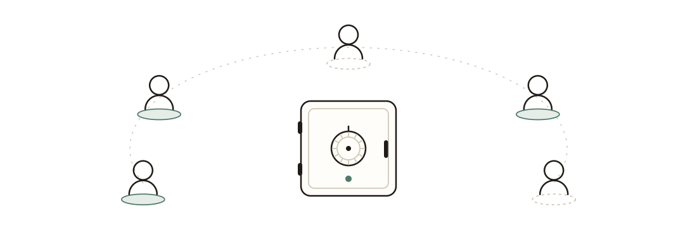
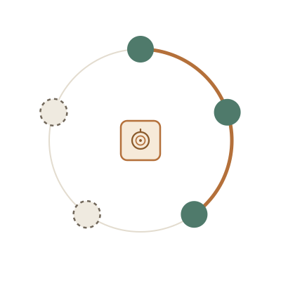
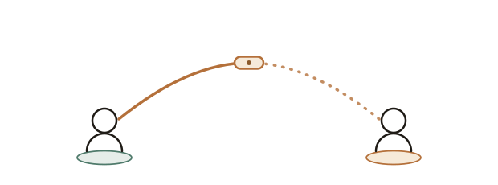
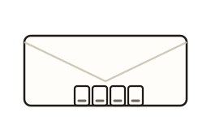
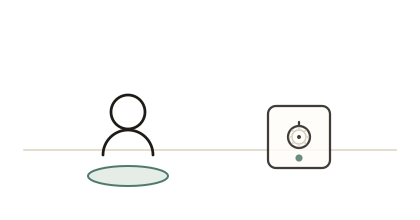
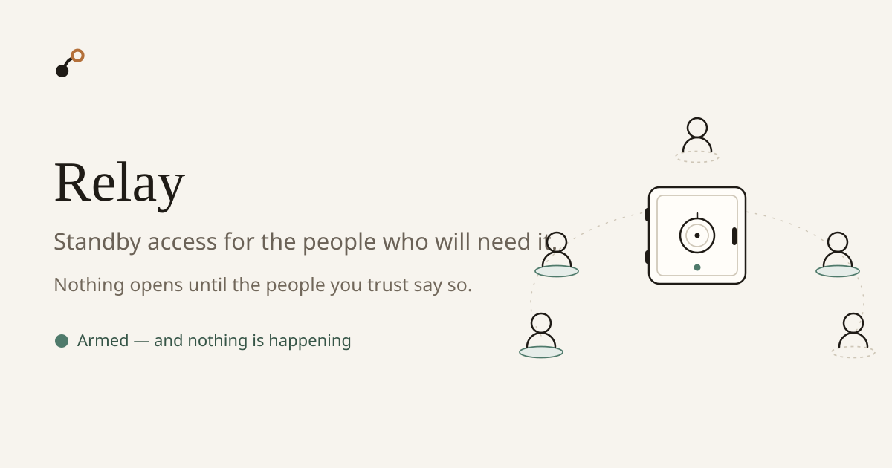

Warm Archive palette. Every asset uses var(--token, #fallback): it themes
when inlined into the app and still renders correctly standalone as <img>.
Reviewed at the sizes each asset is actually used.





